O lado esquerdo da figura 2.1 mostra um
espelho parabólico e cinco raios luminosos entrando nele, paralelos ao eixo do
paraboloide. Vamos representar apenas o corte transversal
do espelho com um plano que passa pelo eixo, como no lado direito da
figura. Tal como será demonstrado no exercício 2.1, os
raios de luz paralelos ao eixo do espelho parabólico são refletidos
passando todos pelo foco F da parábola.
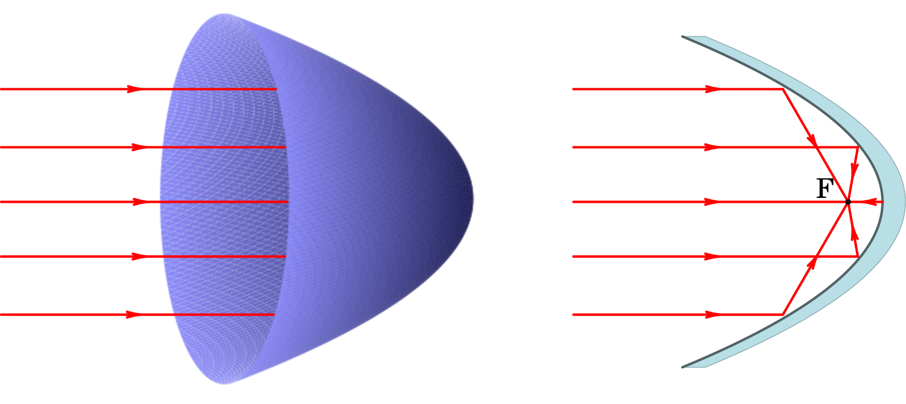
Figure 2.1: Espelho parabólico.
No caso do espelho elíptico do lado esquerdo da figura
2.2, com dois focos F e F, os raios de
luz que saem de um dos focos são refletidos passando todos pelo
outro foco. Neste caso, todos os raios luminosos entre F
e F percorrem o mesmo percurso ótico, já que a soma das distâncias de
qualquer ponto na elipse até os dois focos é constante.
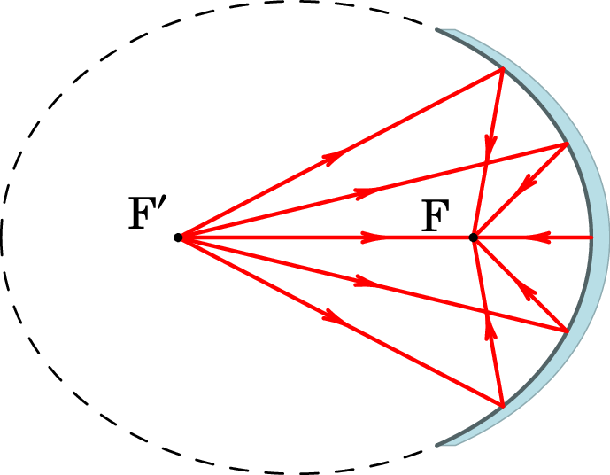
Figure 2.2: Espelhos elíptico e hiperbólico.
Num espelho hiperbólico, qualquer raio de luz que tenha a direção do
foco F no outro lado do espelho, é refletido passando pelo
foco F do espelho (lado direito da figura 2.2).
2.2. Espelhos esféricos
É mais fácil construir espelhos esféricos, como o da
figura 2.3, do que espelhos parabólicos. Um
espelho esférico é uma calota esférica, descrita
metaforicamente como a tampa de uma laranja. Se a superfície do
espelho for muito menor do que a superfície total da esfera, o espelho
esférico funcionará como se fosse parabólico, em que os raios de luz
paralelos ao eixo convergem no seu foco. A imagem no espelho da
figura 2.3 é virtual, mas como veremos,
os espelhos pode também produzir imagens reais.
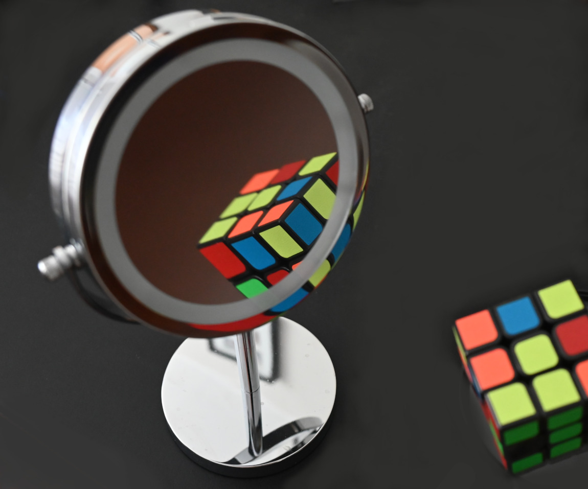
Figure 2.3: Imagem virtual formada por um espelho esférico côncavo.
Numa parábola como a da figura 2.4, a
distância focal é a distância desde o foco F até o vértice O. Como
será demonstrado no exercício 2.1, perto do vértice a
parábola pode ser aproximada por um arco circular de raio , igual a
, e com centro C no eixo da parábola:
(2.1)
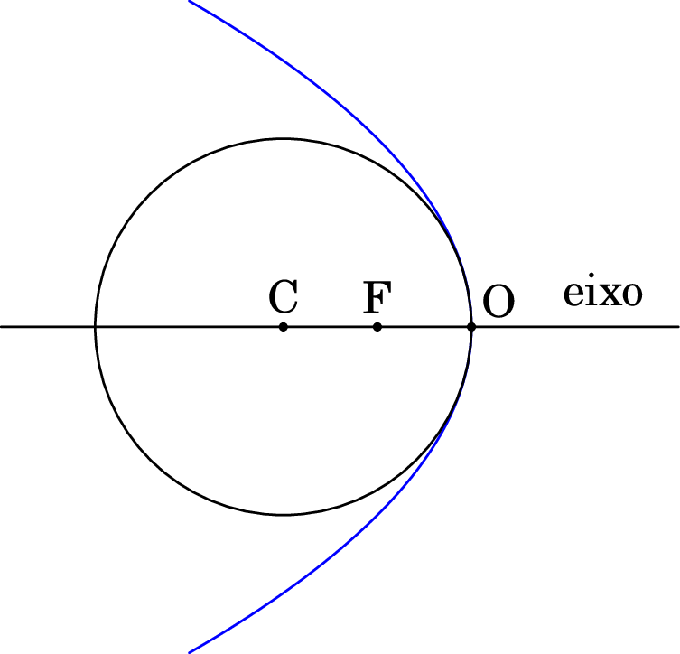
Figure 2.4: Aproximação de uma parábola por um arco de círculo.
A figura 2.4 mostra que a aproximação é
muito boa até quando o arco tem aproximadamente 30 por cima e
por baixo do eixo.
2.3. Objetos e imagens
Nas secções seguintes, a letra o representa um ponto que designamos de
objeto e a letra i designa o ponto onde é formada a imagem desse ponto
o, após a luz ser refletida num espelho, ou refratada numa superfície ou
numa lente. O objeto o pode ser um ponto luminoso, que emite raios de
luz em direções radiais, tal como no lado esquerdo da figura
2.5, em que o ponto luminoso encontra-se frente
a um espelho plano. Os raios refletidos divergem entre si, e parecem
vir do ponto i onde é formada uma imagem virtual. Para maior
claridade, os raios que incidem no espelho foram desenhados a
vermelho, e os raios refletidos a azul.
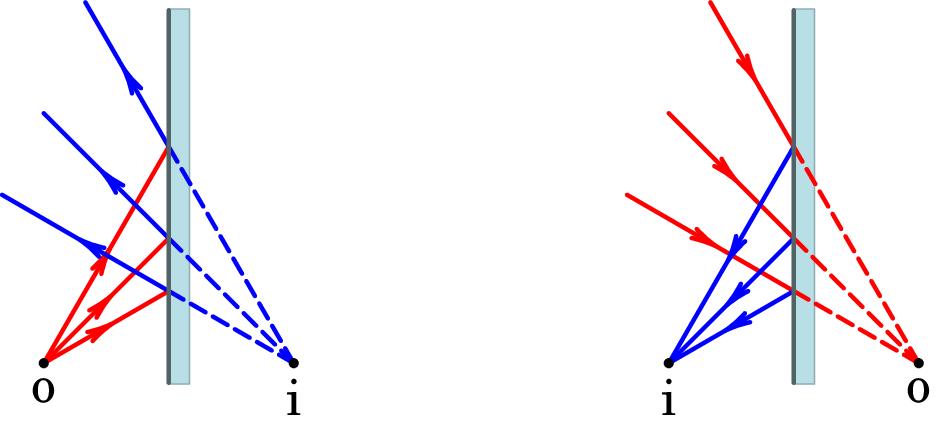
Figure 2.5: Imagem i de um objeto o, formada por reflexão num espelho plano.
O princípio de reversibilidade da luz implica que podemos inverter a
direção dos raios de luz no lado esquerdo da figura
2.5, obtendo-se assim o lado direito da
figura. Os raios incidentes no espelho (vermelhos) aproximam-se entre
si, e após serem refletidos (azul) convergem e cruzam-se no ponto i
onde é formada a imagem. Neste caso trata-se de uma imagem real, que
pode ser projetada num ecrã. Os raios convergentes que incidem no
espelho podem vir, por exemplo, de um projetor. Se não houvesse
espelho, esses raios focavam-se no ponto o indicado na figura, por
detrás do espelho; a presença do espelho não permite que os raios se
cruzem em o, mas a sua prolongação converge para o ponto virtual o,
detrás do espelho.
O que designamos de objeto, representado pela letra o, será o ponto
onde se cruzam os raios incidentes, ou a sua prolongação. Quando os
raios se cruzam num ponto frente ao espelho o objeto é real, e quando
a prolongação dos raios incidentes se cruzam num ponto do outro lado
do espelho, consideramos esse ponto como um objeto virtual. No lado
direito da figura 2.5, o objeto virtual produz
uma imagem real à mesma distância do espelho, mas do lado oposto, e na
mesma posição relativa em relação ao espelho.
Os objetos e imagens num espelho podem ser reais ou virtuais. Os
objetos e imagens virtuais são pontos imaginários por detrás do
espelho. No caso do espelho plano, se o objeto é real a imagem e
virtual, e vice versa, mas no caso dos espelhos esféricos os objetos e
as suas imagens podem ser ambos reais ou virtuais.
2.4. Reflexão num espelho côncavo
Os raios luminosos que passam por um ponto o (objeto) no eixo de um
espelho esférico côncavo, a uma distância do vértice O
do espelho (ver figura 2.6), após serem
refletidos no espelho convergem num ponto i, também no eixo do espelho
(a demonstração é feita no exercício 2.2).
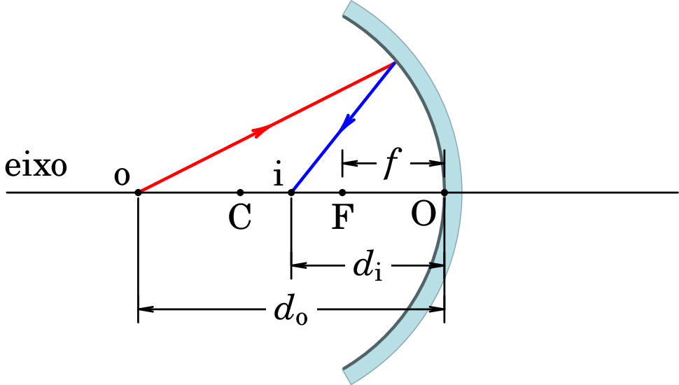
Figure 2.6: Imagem i de um ponto o, refletida num espelho esférico côncavo, quando o está sobre o eixo do espelho.
A distância , desde a imagem i até o vértice O, e da
distância , desde o objeto até o vértice, estão
relacionadas pela seguinte expressão, que designamos
fórmula de Descartes para a reflexão em superfícies
esféricas (ver exercício 2.2):
(2.2)
onde é a distância focal do espelho. A fórmula de Descartes é
válida para qualquer posição do ponto o, no eixo do espelho;
e serão positivas se os respetivos
pontos o ou i estiverem frente ao espelho, ou negativas quando o
respetivo ponto estiver detrás do espelho. Valores positivos de
ou correspondem a um objeto ou imagem
real, e valores negativos correspondem a objetos ou imagens virtuais.
A figura 2.7) mostra os resultados
obtidos com a fórmula de Descartes para algumas posições do objeto o.
Se o estiver no centro do espelho, conduz à
distância ; isto é, a imagem, real, é formada
também no centro: todos os raios que saem do ponto o refletem-se sobre
si próprios.
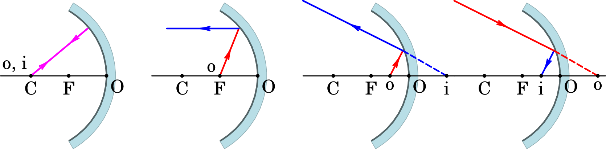
Quando o objeto estiver no foco, , obtém-se
, o que quer dizer que não há imagem:
os raios que saem do objeto são refletidos na direção paralela ao
eixo e nunca se cruzam entre si.
Já quando o objeto estiver entre o foco e o vértice, ,
a equação (2.2) conduz a um valor negativo de
, que indica que os raios refletidos divergem, mas
parecem vir de um ponto i que está no outro lado do espelho. A última
parte da figura 2.7 é o caso inverso ao
anterior, em que o objeto é virtual e os raios refletidos convergem
num ponto entre o foco e o vértice, formando uma imagem real.
Um espelho plano pode ser considerado um espelho esférico de raio
infinito; o lado direito na fórmula de Descartes fica igual a zero, o
que implica que ; ou seja, a imagem é
virtual se o objeto é real, ou real se o objeto é virtual; o objeto e
a imagem encontram-se à mesma distância do espelho, mas em lados
opostos.
2.5. Raios principais
A figura 2.7 sugere um método para
encontrar a posição da imagem de um ponto o que não esteja
sobre o eixo do espelho. O método consiste em traçar a trajetória dos três
raios principais que passam pelo ponto o, e a imagem i estará no
ponto onde esses três raios se cruzam.
O primeiro raio principal é o raio que, partindo do ponto o (ou na
direção de o quando esse ponto estiver do outro lado do espelho),
passa pelo foco F do espelho. Esse raio é refletido em direção
paralela ao eixo do espelho, e é identificado com o número 1 na figura
2.8.
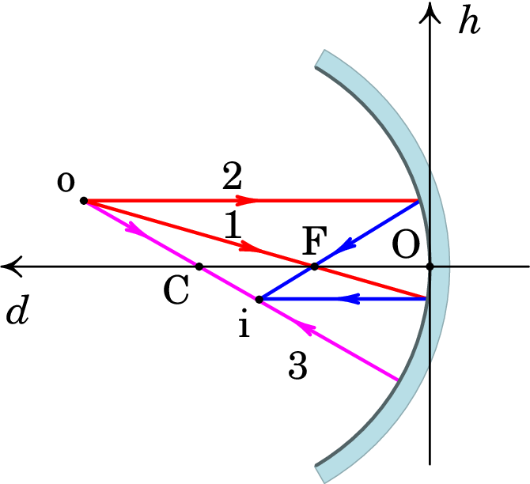
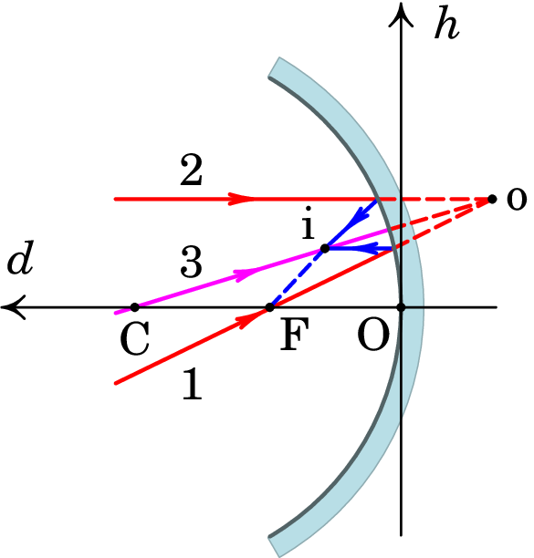
Figure 2.8: Formação da imagem num espelho côncavo, quando o objeto é real (esquerda), ou virtual (direita).
O segundo raio principal (2 na figura 2.8),
parte do ponto o (ou dirige-se para ele), em direção
paralela ao eixo, sendo refletido no espelho na direção do foco
F. O terceiro raio principal, é o raio que parte do ponto o (ou
dirige-se para ele), e passa pelo centro C do espelho. Esse raio
incide perpendicularmente no espelho, sendo assim refletido na mesma
direção em que incidiu.
Os três raios principais cruzam-se num ponto i que está a uma
distância do vértice O, que verifica exatamente a mesma
equação (2.2) das imagens nos pontos no eixo do
espelho. No caso da figura 2.8, em que o
ponto o está a uma distância do eixo do espelho, a
imagem é formada a uma distância do eixo, no outro lado
do eixo, se o e i são ambos reais ou virtuais, ou no mesmo lado do
eixo se um dos pontos o ou i for real e o outro virtual. Se
arbitrarmos que as distâncias são positivas se estiverem por cima
do eixo, e negativas se estiverem debaixo do eixo, encontra-se que
a relação entre e é a mesma relação
entre e , e essa relação é
designada por aumento, :
(2.3)
Observe-se que as distâncias e as alturas são as coordenadas
cartesianas num sistema de eixos perpendiculares com origem O no
vértice do espelho, tal como mostra a figura
2.8. O eixo é o eixo do espelho, com
sentido positivo no lado frente ao espelho; o sentido positivo do eixo
é arbitrário.
Comparando a figura 2.8 com a figura
2.6 podíamos pensar que a imagem i do ponto o na
figura 2.8 deveria estar no raio da
esfera que passa por o, e não debaixo do eixo; no entanto, estamos a
considerar espelhos de tamanho muito menor do que a esfera, com um
único eixo que passa pelo vértice e o foco. Nas figuras o tamanho dos
espelhos tem sido exagerado para ilustrar melhor os conceitos, mas não
se trata de figuras realistas; para que os 3 raios principais se
cruzem num ponto, há que admitir que a superfície do espelho está no
eixo : é um plano mas com um centro e um foco.
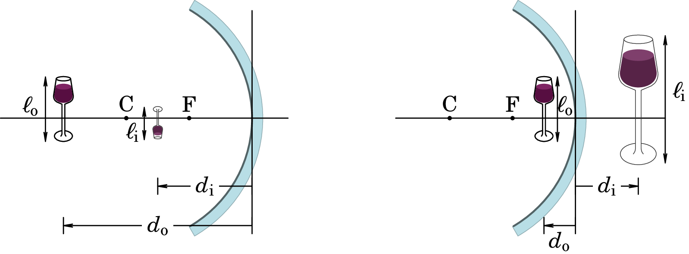
Figure 2.9: Imagem real num espelho côncavo (esquerda) e imagem virtual (direita).
Como as expressões (2.2) e (2.3) são
válidas para todos os pontos o num corpo, essas expressões são também
válidas para um objeto de comprimento na direção
perpendicular ao eixo, e para a sua imagem, de comprimento
na direção perpendicular ao eixo, tal como na figura
2.9. Quando a imagem é real
() o aumento é negativo, o que implica imagem
invertida ( e de sinais opostos). O valor
absoluto do aumento indica a relação entre o tamanho da imagem e o
tamanho do objeto:
(2.4)
No lado esquerdo da figura 2.9, o
aumento é negativo e com valor absoluto menor do que 1. Já no lado
direito da figura, em que a imagem é virtual () e de
tamanho maior do que o objeto, o aumento é positivo e maior que 1.
2.6. Reflexão num espelho convexo
Num espelho convexo (figura 2.10), o centro de
curvatura e o foco encontram-se por detrás do espelho. A fórmula de
Descartes, (2.2) é valida, com as mesmas convenções de
sinal para e , mas a distância focal
é negativa.
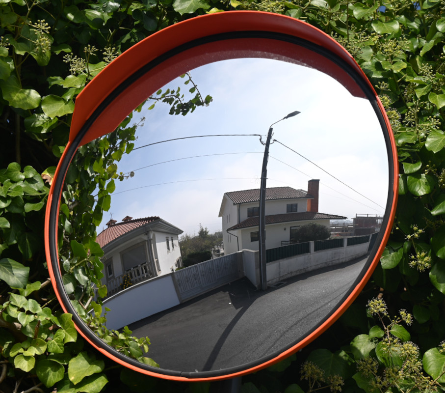
Figure 2.10: Espelho esférico convexo.
Resolvendo a equação (2.2) para a distância até o objeto, obtém-se:
(2.5)
Quando o objeto é real, , e como é negativa, a
equação (2.5) implica que a , é
negativa e menor que : imagem virtual, direita, e
aumento positivo e menor que 1.
Já se o objeto for virtual, , a imagem poderá ser
virtual, invertida, ou real e direita, e com tamanho maior ou menor do
que o objeto. A figura 2.11 mostra dois
casos, quando o objeto é real ou virtual.
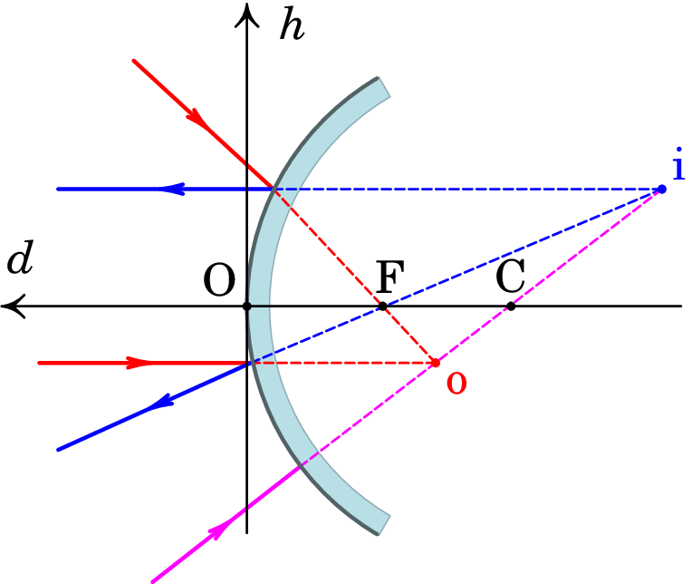
Figure 2.11: Formação da imagem num espelho convexo, quando o objeto é real (esquerda), ou virtual (direita).
2.7. Refração numa superfície esférica
Consideremos uma superfície esférica que separa dois meios, 1 e 2, com
índices de refração diferentes, e , tal como na figura
2.12. Um ponto o, dentro do meio 1, sobre o
eixo da superfície esférica, produz uma imagem em outro ponto ao i
longo do eixo, que poderá estar no meio 1 ou no meio 2.
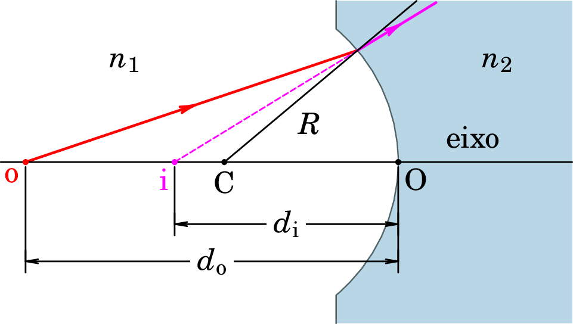
Figure 2.12: Imagem virtual i de um ponto o, quando a luz passa entre dois meios diferentes, separados por uma superfície esférica.
As distâncias e são as distâncias desde
os pontos o e i até o vértice O, que está na interseção da superfície
com o seu eixo. Na figura, os ângulos foram exagerados, mas
consideraremos unicamente raios paraxiais, aproximadamente paralelos
ao eixo, e uma superfície que é apenas uma pequena parte da esfera
completa.
No caso da figura 2.12, o objeto luminoso o
encontra-se a uma distância do vértice, e como o raio
refratado diverge do eixo, parecerá vir de um ponto i, a uma distância
do vértice.
Igual que no caso da reflexão nos espelho curvos, as distâncias
e serão medidas na direção do eixo, com
origem no vértice e com sentido positivo apontando para o lado onde
incidem os raios luminosos na superfície, que é o meio com índice de
refração . O lado negativo é no meio com índice de refração
, onde os raios luminosos são refratados. Tal como nos espelhos,
o objeto o é real se é positiva, ou virtual se
é negativa. Já no caso da imagem, esta é real se
é negativa, ou virtual se é positiva;
neste caso é o oposto do que nos espelhos.
O raio de curvatura será considerado positivo se o centro estiver
no meio com índice de refração , onde incidem os raios, ou
negativo se estiver no meio com índice de refração , onde os
raios são refratados.
Como se demostra no exercício 2.3, a
fórmula de Descartes para a refração na superfície esférica é:
(2.6)
No caso de uma superfície plana de separação entre os meios, o raio
é infinito, e o lado direito da equação
(2.6) igual a zero implica,
(2.7)
a imagem é virtual e a relação entre as distâncias da imagem e do
objeto é a que obtivemos no exercício 1.6 do capítulo
anterior.
Outro caso importante na equação (2.6) é
quando o objeto o está no centro da superfície esférica, o que conduz
a , isto é, uma imagem virtual no mesmo
ponto onde está o objeto (os raios luminosos que saem de o não sofrem
nenhum desvio na passagem pela superfície).
Define-se o foco objeto, , como o ponto do
eixo onde deverá ser colocado um objeto o, para que os raios
refratados sejam paralelos ao eixo (não existe imagem). Substituindo
por infinito na equação (2.6),
a distância obtida para é a distância focal
, desde o vértice até o foco objeto:
(2.8)
no caso da figura 2.12, em que e
é positivo, é negativa e o foco objeto encontra-se
no lado do meio com índice de refração . Quando
for positiva o sistema é convergente, e quando for negativa,
é divergente.
O foco imagem, , é o ponto onde se forma a
imagem de um objeto que esteja no infinito; isto é, os raios
incidentes paralelos ao eixo formam uma imagem no ponto
. A distância , desde o foco imagem até o
vértice, obtém-se encontrando o valor de quando
é infinita na equação (2.6):
(2.9)
no caso da figura 2.12, em que e
é positivo, é positiva e o foco imagem encontra-se
no lado do meio com índice de refração . A soma das duas
distâncias focais e (tendo em conta que
uma delas é positiva e a outra negativa) é sempre igual ao raio da
superfície esférica:
(2.10)
E usando a expressão (2.8), a fórmula de Descartes
para a refração na superfície esférica, (2.6),
pode ser escrita como:
(2.11)
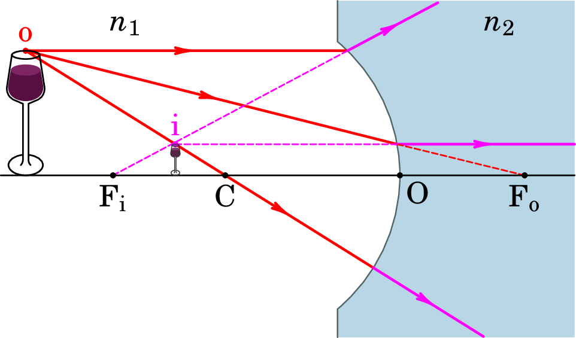
Figure 2.13: Raios principais para a refração através de uma superfície esférica.
Para obter a imagem de um objeto fora do eixo, traçam-se os 3 raios
principais, e a imagem estará na interseção desses raios. O primeiro
raio principal parte do objeto paralelo ao eixo e é refratado passando
pelo foco image , se o sistema é convergente, ou a sua
prolongação parece vir de se o sistema é divergente.
O segundo raio principal parte de objeto na direção do foco objeto
(ou a sua prolongação passa por se o
sistema é divergente), sendo refratado de forma paralela ao eixo. E o
terceiro raio principal parte do objeto e passa pelo centro C da
superfície esférica (ou a sua prolongação passa por C); esse raio é
perpendicular à superfície esférica e, como tal, não sofre nenhum
desvio.
Os 3 raios principais, após serem refratados, cruzam-se num ponto
comum onde é formada a imagem real, ou no caso em que divergem,
parecem vir de um ponto comum onde é formada a imagem virtual. A
figura 2.13 mostra os três raios
principais e a imagem de um objeto fora do eixo, no caso em que
e . A distância obtida na interseção dos
raios principais verifica a fórmula de Decartes
(2.6).
2.8. Lentes finas
Uma lente fina é um meio transparente delimitado por duas superfícies
esféricas. Será considerada fina quando a espessura no meio da lente
for desprezável comparada com as distâncias até os objetos e imagens.
Um ponto o forma uma primeira imagem após a refração na
primeira superfície esférica de raio . Essa primeira imagem é o
objeto que produz a imagem final i após a refração na segunda
superfície, de raio .
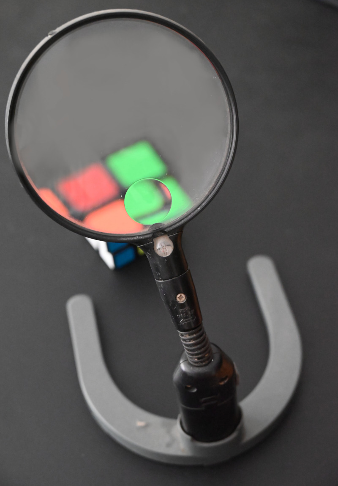
Figure 2.14: Imagem virtual formada por uma lente convergente.
Por simplicidade, vamos admitir que o meio fora da lente é ar, com
índice de refração igual a 1. Na figura 2.15, o raio
incidente na primeira superfície da lente é indicado a vermelho, e
passa pelo ponto o; o raio refratado nessa primeira superfície,
indicado a roxo, interseta o eixo no ponto , onde é
formada a imagem. A distâncias e
verificam a formula de Descartes para refração em superfícies
esféricas, (2.6), com , igual
ao índice de refração da lente, e igual ao raio da primeira
superfície:
(2.12)
O raio roxo que passa pelo ponto incide na segunda
superfície, e o raio refratado foi colorido a azul na figura
2.15; a sua prolongação interseta o eixo no ponto i,
que é a imagem do ponto produzida pela refração na
segunda superfície. A fórmula de Descartes
(2.6) aplicada a essa superfície, com
, , e , conduz
a:
(2.13)
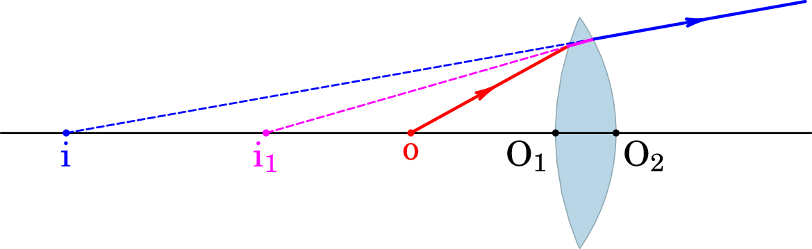
Figure 2.15: Refração nas duas superfície esféricas de uma lente.
As distâncias na equação (2.12) deveriam ser
medidas desde o vértice da superfície 1, enquanto que
na equação (2.13) são medidas desde o vértice
da superfície 2. Mas como a lente é fina, vamos admitir
que nos dois casos as distâncias são medidas desde um ponto intermédio
entre e . Substituindo a equação
(2.12) na equação (2.13), obtém-se a fórmula de
Decartes para lentes finas
(2.14)
O foco objeto, , é o ponto a uma distância
onde um ponto o deve ser colocado para que os raios de luz que ele
emite saiam da lente paralelos ao eixo (não há imagem). No limite
, o resultado obtido em
(2.14) para é o inverso da
distância focal :
(2.15)
quando for positiva, a lente é convergente, e quando for
negativa, é divergente.
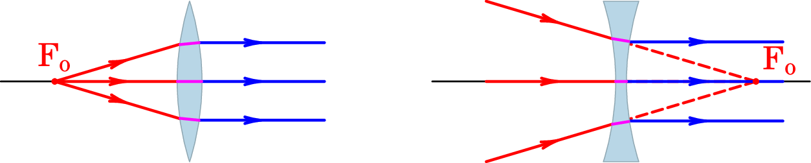
Figure 2.16: Foco objeto numa lente convergente (esquerda) ou divergente (direita.
O foco imagem, , é o ponto onde é formada a
imagem dos raios que incidem na direção paralela ao eixo (objeto a uma
distância infinita da lente). No limite
, é o inverso da
distância até o foco imagem, e o resultado é o mesmo do que na equação
(2.15) mas com sinal oposto. Isso mostra que o foco
imagem, está á mesma distância do foco objeto, mas no lado oposto da
lente. Uma lente fina tem dois focos, ambos no eixo e à mesma
distância nos dois lados da lente. A equação (2.15) se
designa equação do fabricante de lentes, porque permite
determinar os valores que deverão ter os raios, para um determinado
vidro de índice de refração , para que a lente tenha a distância
focal pretendida.
A figura 2.17 mostra alguns tipos de lentes. As duas
primeiras são lentes convergentes () e as duas últimas são
divergentes (). Se uma lente for mais larga no centro do que nos
bordes é convergente, e se for mais estreita no centro do que nos
bordes é divergente.
Figure 2.17: Diferentes tipos de lentes.
Usando a equação (2.15), a fórmula de Descartes pode
ser escrita de forma análoga ao caso de espelhos esféricos:
(2.16)
A potência dióptrica, , de uma lente é o inverso da sua
distância focal:
(2.17)
se a distância focal for medida em metros, estará em
dioptrias. Assim por exemplo, uns óculos com dioptrias
têm lentes divergentes, com distância focal de 50 cm.
Um ponto o fora do eixo da lente, com coordenadas e
medidas desde o vértice O, nas direções do eixo e do
plano da lente, produz uma imagem i com coordenadas e
. A relação entre e é a
mesma relação entre e . O aumento da
lente é:
(2.18)
No caso de um objeto formado por vários pontos, o comprimento da
imagem, , na direção perpendicular ao eixo, será
, onde é o comprimento do objeto,
perpendicular ao eixo (figura 2.18).
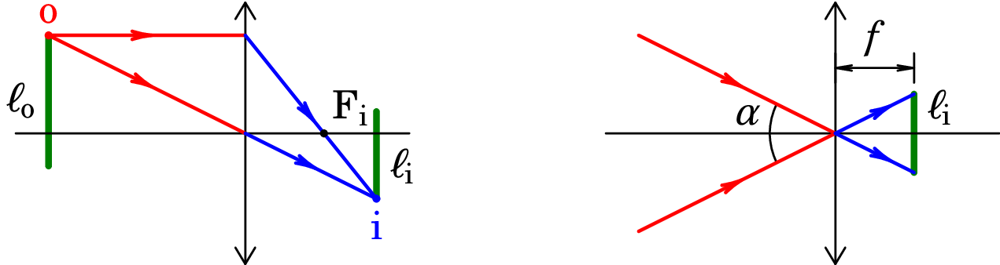
Figure 2.18: Aumento de uma lente.
Quando o objeto é muito distante (),
será mais conveniente usar o ângulo desde o vértice da lente
até o objeto, e como a imagem é formada no foco, o tamanho da imagem
será (lado direito da figura 2.18).
2.9. Instrumentos com uma única lente
Nas seguintes secções descreveremos alguns instrumentos óticos muito
usados, na sua versão mais rudimentar, em que basta usar uma ou duas
lentes. Na prática são usadas muitas lentes por diversas razões, mas o
princípio de funcionamento é mais claro na versão rudimentar.
2.9.1. Máquina fotográfica
Uma máquina fotográfica simples precisa apenas uma lente convergente
(figura 2.19). O objeto é colocado a uma
distância maior que o centro da lente, formando-se assim uma imagem
real, invertida e menor do que o objeto. Nas máquinas analógicas essa
imagem produz reações químicas na película fotográfica, e nas máquinas
digitais produz impulsos elétricos numa quadrícula de sensores.
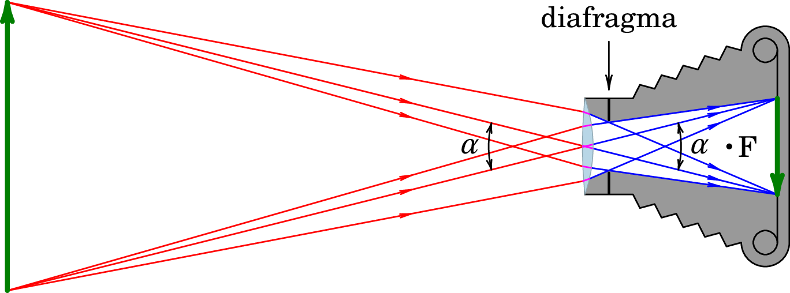
Figure 2.19: Máquina fotográfica.
A imagem de um objeto muito afastado é produzida no plano focal da
lente localizado no fundo da máquina, onde se encontra a película
fotográfica ou os sensores. Como o aumento da imagem é proporcional à
distância onde é formada a imagem, o aumento da lente é proporcional à
sua distância focal ; uma lente com distância focal de menos de
20 mm tem muito menor aumento do que uma lente com 200 mm de distância
focal. No primeiro caso, o tamanho menor das imagens permite registar
na fotografia objetos num ângulo maior à volta da lente, que é
designada por grande angular. Já a lente com 200 mm é uma
teleobjetiva (ou zoom), que produz imagens de maior tamanho
dos objetos afastados, mas os objetos que podem ficar registados na
fotografia estão num ângulo menor em torno da lente.
Quanto mais próximo estiver o objeto da lente, menor será a distância
da imagem, que é menor do que a distância focal. É
necessário então aproximar a lente do fundo da máquina (focar), para
que a imagem seja formada na película fotográfica.
A intensidade de luz que atinge o fundo da máquina é proporcional à
área da lente (quantidade de luz que entra na máquina), e inversamente
proporcional à área da imagem (quantidade de luz por unidade de
superfície). A área da imagem é proporcional ao quadrado do aumento,
ou seja, proporcional a . Se o diâmetro da lente for , a
intensidade da luz na imagem é então proporcional a
. Define-se o número f, como a relação (o
número f não deverá ser confundido com a distância focal ).
A intensidade da imagem é assim inversamente proporcional ao quadrado
do número f. Um aumento de no número f implica diminuição
da luminosidade da imagem a metade. Numa lente aumenta-se o número f
reduzindo o diâmetro de entrada da lente por meio de um diafragma. Os
valores padrão usados para os possíveis números f num alente são: 1.4,
2, 2.8, 4, 5.6, 8, 11 e 22. Cada número nessa série é aproximadamente
o anterior vezes ; como tal, aumentar o número f de uma
posição na série implica diminuir a luminosidade a metade. O menor
valor possível para o número f obtém-se quando o diafragma estive
completamente aberto e corresponde à luminosidade máxima da lente.
Valores elevados do número f implica que os raios que convergem para
produzir cada ponto na imagem estão num ângulo menor, dando maior
profundidade de campo, ou seja, objetos que não estejam
exatamente à distância que está a ser focada na película fotográfica,
aparecem ainda aproximadamente focados. No caso da câmara escura, a
abertura aproxima-se de zero, o que implica número f muito elevado e
uma imagem que aparece sempre focada, mas com baixa luminosidade.
2.9.2. O olho humano
O olho humano, tal como uma máquina fotográfica, projeta uma imagem
real de um objeto, reduzida e invertida, na retina (figura
2.20) onde existem células sensíveis á luz que enviam
impulso elétricos para o cérebro. Para focar as imagens de objetos a
diferentes distâncias, não é afastada ou aproximada a lente, como numa
máquina fotográfica, mas altera-se a distância focal da lente. Há
realmente duas lentes no olho, uma mais externa, formada pelo humor
vítreo, e outra mais interna: o cristalino. O humor vítreo tem forma e
índice de refração fixos, enquanto que o cristalino pode mudar a sua
forma, por contração do músculo à sua volta, alterando a sua curvatura
e distância focal.
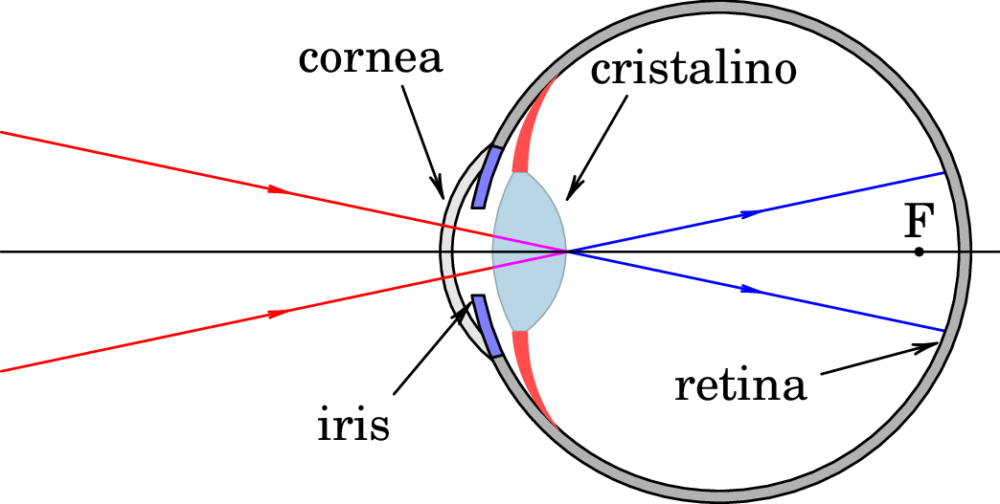
Figure 2.20: Olho humano.
Tal como nas máquinas fotográficas, o olho tem um diafragma que ajusta
a quantidade de luz que entra mudando o seu diámetro. Trata-se do
iris, que é a parte colorida do olho.
2.9.3. O projetor
No caso de um projetor, o objeto coloca-se invertido, entre o centro
e o foco e de uma lente convergente. Forma-se assim uma imagem real,
de tamanho maior do que o objeto, e invertida em relação ao objeto,
que pode ser focada num ecrã.
2.9.4. A lupa
Uma lupa é uma lente convergente. O objeto coloca-se entre o foco e o
vértice da lente, formando-se assim uma imagem virtual, de tamanho
maior do que o objeto, que pode ser observada como se estivesse no
mesmo lado onde está o objeto (figura 2.21).
Figure 2.21: Lupa.
A lupa usa-se de forma a que a distância onde é formada a
imagem seja igual à mínima distância em que a visão da pessoa lhe
permitir focar a imagem, que é aproximadamente 25 cm, mas muda com a
idade (uma criança consegue ver objetos a distâncias de 10 cm,
enquanto que um adulto com mais de 50 anos costuma ter uma distância
mínima de visão de aproximadamente 40 cm).
2.10. Instrumentos com duas lentes
2.10.5. O microscópio
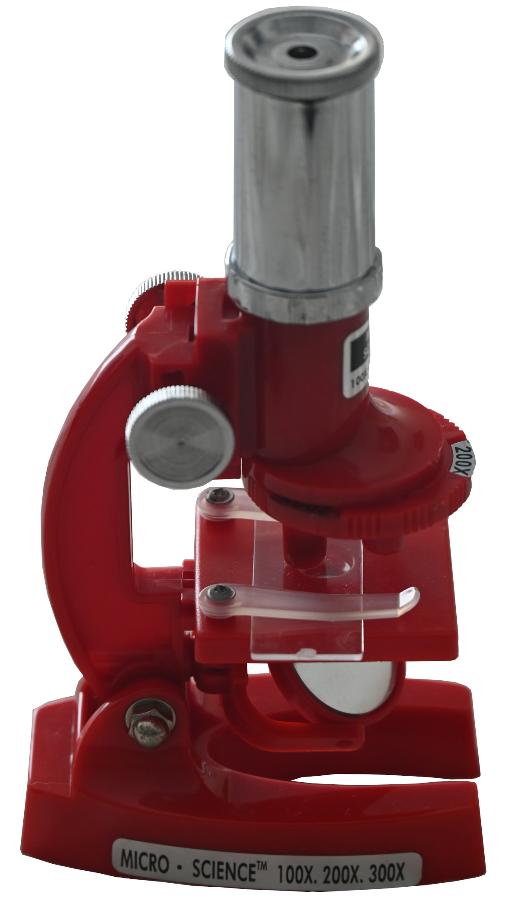
Figure 2.22: Microscópio.
O microscópio é composto por duas lentes convergentes, a
objetiva, mais próxima do objeto, e o ocular, mais
próxima do observador. A objetiva atua de forma semelhante a um
projetor: o objeto coloca-se entre o centro e o foco da objetiva,
formando assim uma imagem real, invertida e de tamanho maior do que o
objeto. O ocular atua como uma lupa aumentado ainda mais o tamanho da
imagem: o ocular desloca-se de forma a que a imagem produzida pela
objetiva esteja entre o sue foco e o seu vértice
(figura 2.23).
A imagem observada no ocular é virtual, invertida e com tamanho que
pode ser até centenas de vezes maior do que o tamanho do objeto.
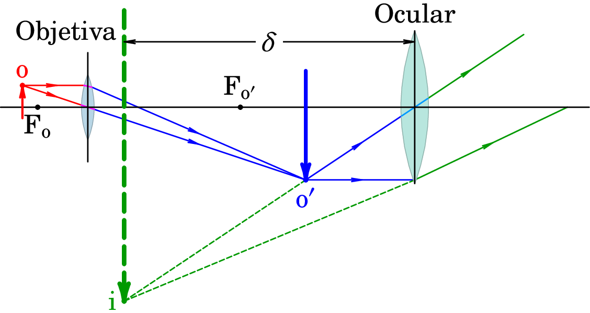
Figure 2.23: Criação da imagem num microscópio.
2.10.6. O telescópio
Há dois tipos principais de telescópios: refratores e refletores. Em
ambos casos, tal como o microscópio, estão formados por uma objetiva e
um ocular. A diferença é que num telescópio refrator a objetiva é uma
lente convergente, enquanto que num telescópio refletor a objetiva é
um espelho côncavo. Em ambos casos o ocular é uma lente convergente.
A diferença entre o telescópio refrator e o microscópio é que o objeto
encontra-se longe, a uma distância várias vezes maior do que o raio
da objetiva. A imagem produzida é assim real, invertida, e de menor
tamanho do que o objeto (não seria possível projetar dentro do
telescópio uma imagem maior do que o tamanho de um planeta, por
exemplo). O ocular, tal como no microscópio, usa-se como uma lupa,
para aumentar o tamanho da imagem da objetiva; deslocando o ocular de
forma a que a imagem real da objetiva esteja entre o seu foco e o seu
vértice, obtém-se uma imagem virtual, e maior do que a imagem
produzida pela objetiva (figura 2.24).
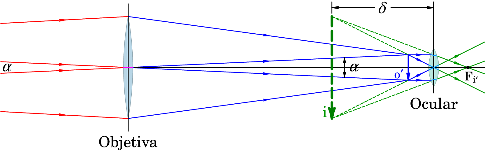
Figure 2.24: Criação da imagem num telescópio.
Exercícios resolvidos
2.1. (a) Encontre a equação da parábola,
no plano , com foco F no ponto de coordenadas e
reta diretriz D com equação , usando a definição: conjunto de
pontos equidistantes do foco e da diretriz. (b) Determine o
raio de curvatura da parábola da alínea anterior, no seu vértice
(interseção da parábola com o seu eixo de
simetria). (c) Mostre que em cada ponto da parábola, a reta
tangente faz o mesmo ângulo com o segmento que une o ponto com o
foco, e com a perpendicular à diretriz que passa pelo
ponto. (d) Demonstre que os raios luminosos paralelos ao eixo
de um espelho parabólico são refletidos passando pelo foco.
Resolução. (a) As distâncias desde um ponto
até o foco e até a diretriz são ( e podem ser positivas ou
negativas):
Como essas distâncias são iguais, os seus quadrados também são
iguais, e obtemos a expressão:
(b) O eixo de simetria é o eixo , e o vértice é a
origem. Imaginando um ponto que se desloca ao longo da parábola, e
que em cada instante está no ponto com coordenada igual a
, o vetor posição do ponto é:
e os vetores velocidade e aceleração são:
O ponto passa pelo vértice em , e nesse instante a velocidade e
a aceleração são:
Como a aceleração é perpendicular à velocidade, o seu módulo é a
aceleração normal , e o raio de curvatura é:
Na vizinhança do vértice, a parábola é aproximadamente um arco de
circunferência com raio igual ao dobro da distância focal , e
centro C no ponto .
(c) A figura seguinte mostra o vetor , desde o
foco F até um ponto na parábola, o vetor , desde
a diretriz D, na direção perpendicular, até o mesmo ponto na
parábola, e o vetor tangente à parábola no mesmo ponto.
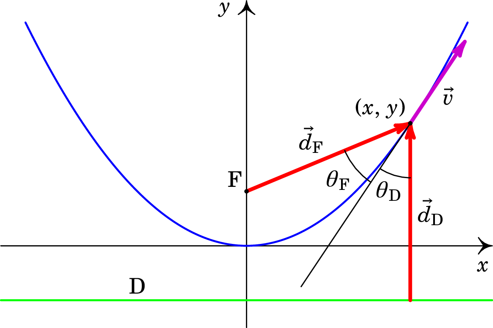
Os vetores e são:
O vetor tangente é o vetor velocidade calculado na alínea
anterior mas com em vez de :
O produto escalar de com os vetores e
conduz ao mesmo resultado:
Mas esses produtos escalares também são iguais a:
e, como as duas distâncias e são iguais, conclui-se que
os cossenos dos dois ângulos são iguais e .
(d) A figura seguinte mostra um raio luminoso, paralelo ao
eixo da parábola, que toca um ponto na parábola, e outro raio que
sai desse ponto em direção do foco.
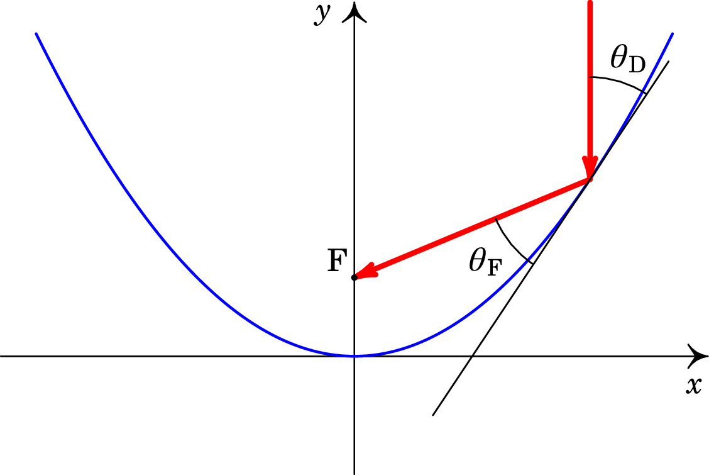
Esses dois vetores são os simétricos dos vetores e
da alínea anterior e, como tal, os ângulos e
são os mesmos ângulos da alínea anterior, que são
iguais. Conclui-se assim que o raio que passa pelo foco é a
reflexão do raio incidente paralelo ao eixo da parábola. Como o
resultado é válido para qualquer ponto na parábola, qualquer raio
paralelo ao eixo será refletido na direção do foco.
2.2. Demonstre a fórmula de Descartes para a
reflexão numa superfície esférica, equação (2.2).
Resolução. A figura seguinte mostra um raio que sai do
ponto o no eixo, e após ser refletido no ponto P do espelho forma a
imagem no ponto i no eixo. Como o segmento CP é perpendicular ao
espelho, os ângulos que esse segmento forma com os dois raios são os
ângulos de incidência e de reflexão, , ambos iguais.
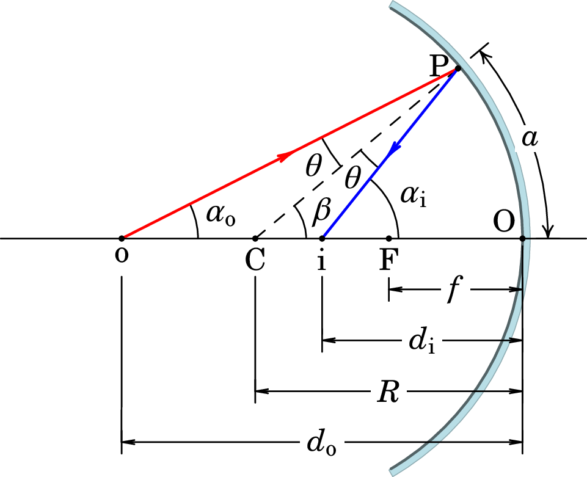
As relações entre os ângulos na figura são
, e
. Eliminando , obtêm-se:
O arco , entre o ponto P e o vértice O, é um arco de raio R e
ângulo , mas também é aproximadamente um arco de raio
e ângulo , e aproximadamente um
arco de raio e ângulo . A
aproximação é muito boa no caso em que os raios incidente e
refletido são paraxiais (aproximadamente paralelos ao eixo
do espelho). Como tal, os três ângulos podem ser calculados em
função do arco :
onde foi usado o facto que o raio é igual ao dobro da sua
distância focal . Substituindo na equação acima obtém-se a
fórmula de Descartes:
Na figura acima, as distâncias foram traçadas usando a fórmula de
Descartes, e o facto de que os raios não são paraxiais reflete-se
em que os dois ângulos indicados como não são exatamente
iguais; um deles é , e o outro . No entanto,
inclusivamente nesse caso observa-se que a aproximação é boa.
2.3. Demonstre a fórmula de Descartes
para a refração através de uma superfície esférica, equação
(2.6).
Resolução. A figura seguinte mostra um raio que sai dum
ponto o no eixo, e é refratado no ponto P da superfície esférica. A
imagem i é formada no ponto onde a prolongação de raio refratado
cruza o eixo. Como o segmento CP é perpendicular à superfície
esférica, os ângulos que esse segmento forma com os dois raios são
os ângulos de incidência, , e de refração, .
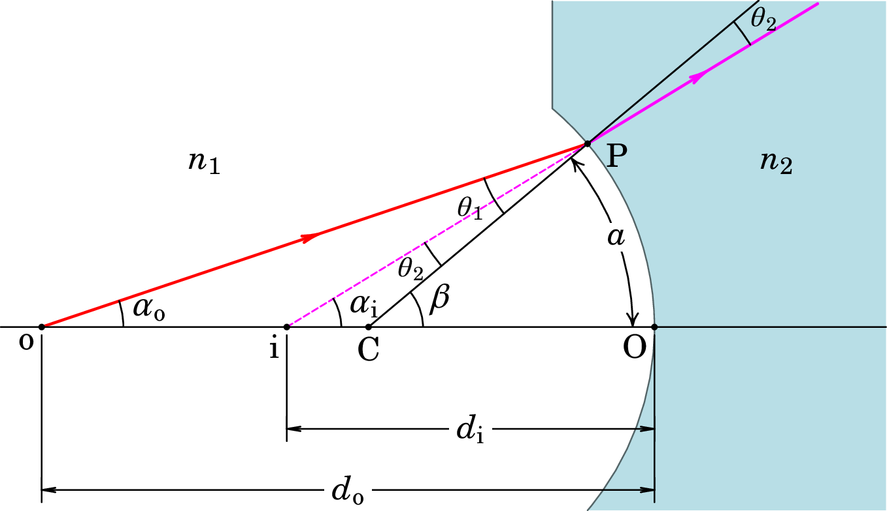
No triângulo CPo, o ângulo externo é igual à soma dos dois
ângulos internos opostos, e , e no
triângulo CPi, esse mesmo ângulo externo é igual à soma dos
ângulos e ; como tal,
se o raio luminoso for paraxial, e
podem ser aproximados por e ,
porque os dois ângulos são pequenos. A lei de Snell conduz a:
O arco , entre o ponto P e o vértice O, é um arco de raio R e
ângulo , mas também é aproximadamente um arco de raio
e ângulo , e aproximadamente um
arco de raio e ângulo . Podemos
assim substituir os três ângulos na equaão anterior pelo arco
dividido pelo respetivo:
e obtém-se assim a fórmula de Descartes para refração numa superfície
esférica de raio :
2.4. Um espelho côncavo tem distância
focal de 60 cm. Um objeto de 5 cm é colocado enfrente do espelho,
perpendicular ao seu eixo, a uma distância do
vértice. Determine o tipo de imagem formada, o seu tamanho, e a sua
posição relativa ao vértice do espelho, quando for
igual a: (a) 160 cm, (b) 90 cm, e (c) 36 cm.
Resolução. (a) Usando a fórmula de Decartes,
e o aumento é:
A imagem é real ( positiva), invertida ( negativo),
de 3 cm ( cm), e é formada a 96 cm do vértice, no mesmo lado
do objeto.
(b)
e o aumento é:
A imagem é real ( positiva), invertida ( negativo),
de 10 cm ( cm), e é formada a 180 cm do vértice, no mesmo lado
do objeto.
(c)
e o aumento é:
A imagem é virtual ( negativa), direita (
positivo), de 12.5 cm ( cm), e é observada como se estivesse
a 90 cm do vértice, no outro lado do espelho.
2.5. Uma lente colocada a 55 cm de um objeto, produz uma imagem do
objeto que pode ser projetada, do outro lado la lente, a 67.3 cm da
lente. Diga que tipo de lente foi usada e determine a sua distância
focal.
Resolução. Como a imagem pode ser projetada, trata-se de
uma imagem real, e a lente é convergente. Substituindo os valores
das distâncias do objeto, cm e a sua imagem,
cm na fórmula de Descartes para lentes
(2.16),
Que implica:
2.6. Uma lente convergente está a projetar num ecrã a imagem bem
focada de uma lâmpada. Sem alterar as posições da lâmpada e da
lente, coloca-se uma segunda lente a 30 cm do ecrã, de forma a que
os raios convergentes no ecrã passem através dela. Sabendo que a
segunda lente tem raios cm e cm, e está feita de
vidro com índice de refração 1.65, que distância deverá ser
deslocado o ecrã para que a nova imagem fique bem focada?
Resolução: A distância focal da segunda lente obtém-se a
partir da equação (2.15):
Essa segunda lente é então convergente; como foi colocada 30 cm
antes do ponto onde os raios da primeira lente convergem, o objeto
que produz a imagem na segunda lente é virtual e a distância até a
lente é cm. Aplicando a fórmula de Descartes para
lentes,
O sinal negativo indica que é uma imagem real, no mesmo lado onde
está o ecrã, que pode ser focada. Para focar essa nova imagem, o
ecrã deverá ser deslocado cm, chegando mais próximo
da segunda lente.
2.7. Um copo de 11 cm de altura, numa mesa, é colocado a 30 cm de uma
lente fina, divergente, perpendicular à mesa, com distância focal de
20 cm. (a) Determine a posição, tamanho e tipo de imagem do
copo. (b) Se a lente estiver apoiada na superfície da mesa e
tiver um diâmetro de 6 cm, mostre como obter a imagem do copo pelo
método gráfico.
Resolução: (a) A distancia do objeto é cm, e
a distância focal cm a equação (2.16)
conduz a:
e o aumento é,
e o tamanho da imagem:
A imagem é virtual (), direta (), com cm de
altura, e é formada a 12 cm da lente.
(b) O eixo da lente estará 3 cm por cima da mesa. a figura
seguinte mostra o copo, a 30 cm da lente, e a sua imagem.
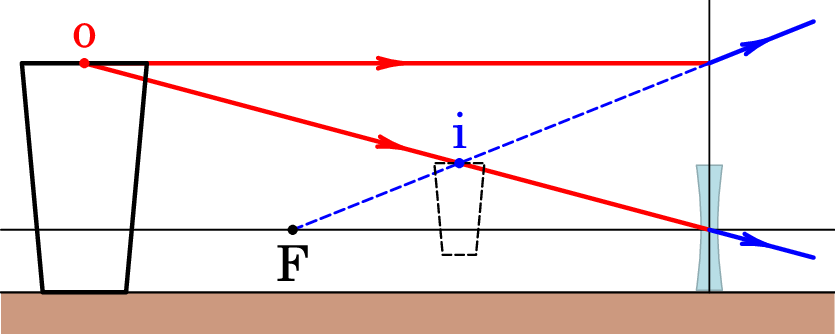
Para construir a imagem, foi traçado o ponto o no topo do copo, que
está 8 cm por cima do eixo e a 30 cm do plano da lente. A seguir
foram traçados dois dos raios principais desde o ponto o; o
primeiro, sai do ponto o e passa pelo vértice da lente (interseção
do eixo com o plano da lente). O segundo raio sai do ponto, paralelo
ao eixo, e ao chegar ao plano da lente é refratado para cima, porque
a lente é divergente; o raio refratado foi traçado usando uma linha
auxiliar desde o foco imagem da lente (20 cm à esquerda do plano da
lente e sobre o eixo) até o ponto onde o raio incidente toca o plano
da lente; a extensão dessa linha auxiliar a partir desse ponto é o
raio refratado.
A imagem i do ponto o encontra-se na interseção entre a linha auxiliar
que passa pelo foco, e o raio que passa pelo vértice. Trata-se de
uma imagem virtual e, como tal, é direita. O resto da imagem
traça-se sabendo que a parte de baixo da imagem deverá estar
debaixo do eixo, a 3/8 da distância que a imagem do topo do copo
está por cima do eixo.
Observe-se que os raios principais não têm que passar pela
lente. Neste caso o raio paralelo ao eixo interseta o plano da lente
fora dela; um observador próximo da lente observará apenas os raios
de luz que passam através da lente, e não o raio principal paralelo
ao eixo; mas esses raios parecerão vir do ponto i que foi obtido
traçando esse raio principal.
2.8. Vai ser construída uma lente biconvexa com vidro de índice de
refração igual a 1.580. Pretende-se que a lente tenha distância
focal de cm e que o raio de curvatura de uma das fases seja o
dobro do que a outra. Determine o comprimento que deverão ter os
raios das duas superfícies.
Resolução: Como a lente é biconvexa, então e
. Substituindo na equação do construtor de
lentes, (2.8),
e substituindo os valores dados:
Como é o dobro desse valor, os raios das duas superfícies
deverão ser 5.22 cm e 10.44 cm. Observe que a ordem não interessa.
2.9. Demonstre que a potência dióptrica de duas lentes finas, muito
juntas, é igual à soma das suas potências.
Resolução: A figura seguinte mostra as duas lentes,
e , e os seus respetivos focos imagem,
e .
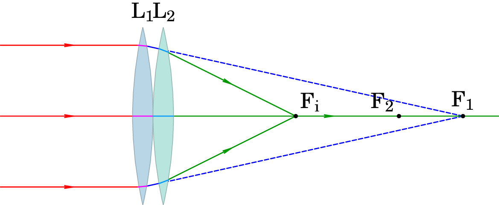
O foco imagem do sistema será o ponto onde convergem os raios
incidentes, paralelos ao eixo, após serem refratados pelas duas
lentes. Após a refração na primeira lente, os raios seguem na
direção de , que está aproximadamente (se as lentes
forem finas e estifverem muito juntas) à distância
da lente 2, onde é a distância focal da
lente ; a imagem formada pela lente
estará no foco imagem do sistema que, por definição, está à
distância , sendo a distância focal do sistema. Substituindo
na fórmula de Descartes para a segunda lente,
E a expressão para a distância focal do sistema, em função das
distâncias focais das duas lentes, é:
Como a potência dióptrica das lentes é o inverso da distância focal,
em metros, o resultado anterior é que a potência do sistema é
igual à soma das potências e das duas lentes:
2.10. A objetiva e o ocular do telescópio da figura
2.24 têm distâncias focais de cm e cm,
e a distância entre as duas lentes é de 60 cm. O objeto que está a
ser observado tem 1.025 m de altura, e encontra-se a 11.55 m da
objetiva. Determine o tamanho da imagem, e a sua distância
desde o ocular.
Resolução. Como a objetiva é uma lente convergente, a
distância onde será formada a imagem da objetiva
é, usando a equação (2.16) (distâncias em cm),
O resultado negativo mostra que a imagem é real e invertida. O tamanho
dessa imagem intermédia é:
Essa imagem intermédia será o objeto (real) que se encontra a cm
do ocular, e como essa lente é também convergente, com distância
focal de 6.67 cm, temos que:
Trata-se de uma imagem virtual, a 19.97 cm do ocular, e com tamanho:
Exercícios adicionais
2.11. Num espelho côncavo de distãncia focal , determine a
distância à qual deverá ser colocado um objeto para
que: (a) A sua imagem seja virtual, e (b) o tamanho da
imagem seja menor do que o tamanho do objeto.
2.12. A lente na figura 2.19 tem raios
cm e cm. Determine o coeficiente de refração do
vidro da lente, sabendo que a distância focal da lente é 6 cm.
2.13. A objetiva do telescópio refletor num observatório astronômico
é um espelho côncavo com 1.5 m de distância focal. Determine o
tamanho da imagem da Lua formada por esse espelho, admitindo que o
diâmetro da Lua é de 3475 km e o observatório encontra-se a uma
distância de km da Lua.

 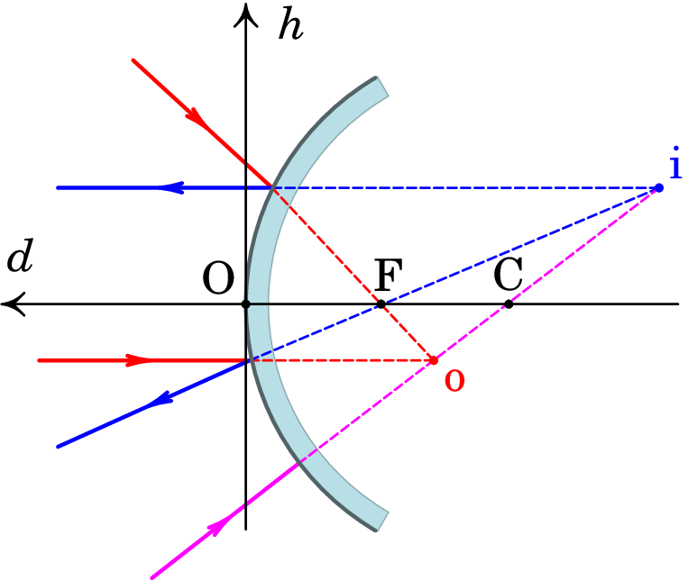
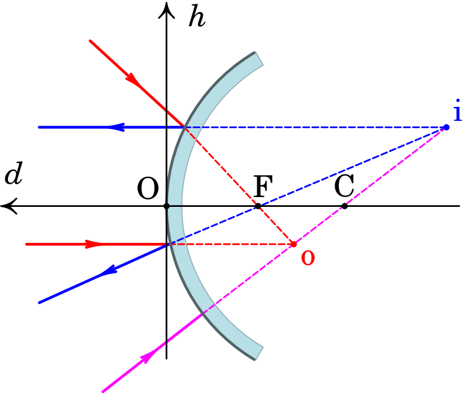